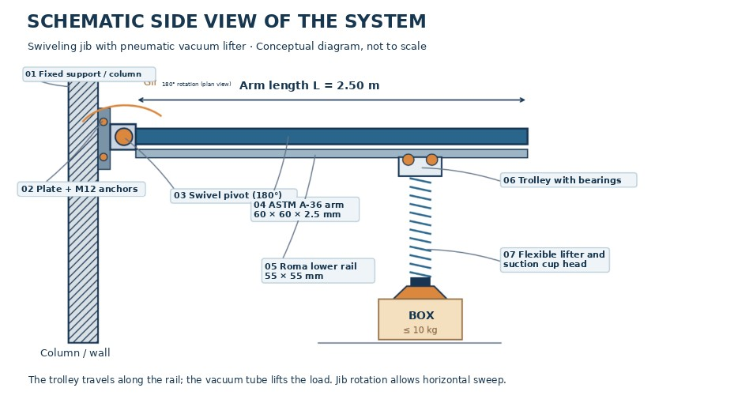
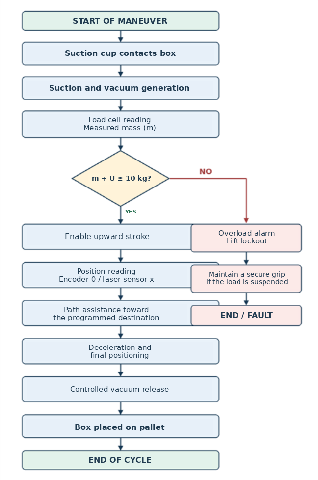
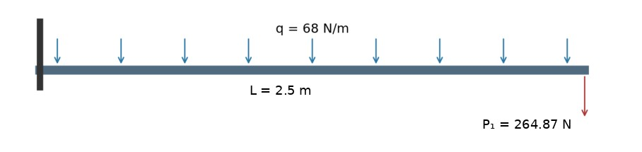
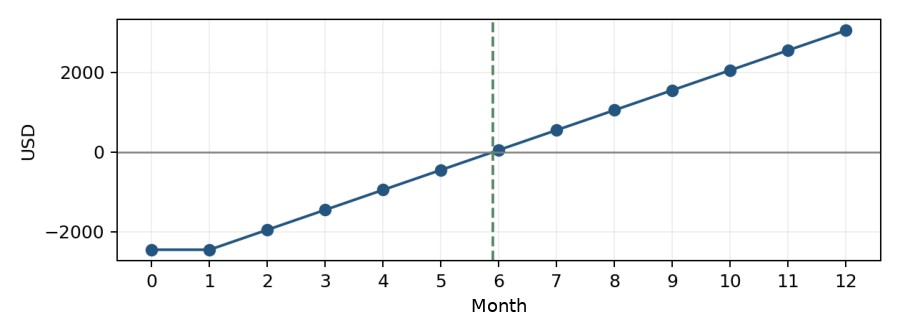

Design and Sizing of a Pneumatic Vacuum Lifting and Handling Device with Integrated Weighing Sensors and a Path Recognition System for Boxes up to 10 kg.
A seminar design for handling boxes up to 10 kg with pneumatic vacuum assistance. It combines mechanical sizing with a proposed weighing interlock and path guidance system, and evaluates the design using calculations and projected costs.

Project Overview
Developed for the Mechanical Design of Ergonomic Systems seminar at Universidad Nacional de Tucumán, this project proposes a vacuum-assisted device for repetitively moving boxes up to 10 kg and 500 × 500 × 500 mm. Ángel used the 2018 project by Lezana and Rousse as a methodological reference. His proposal incorporates ergonomic criteria, continuous weighing with overload interlocking, and path assistance.
Project Objective
Design and size a pneumatic vacuum lifting and handling system with integrated weight sensing and path recognition, and estimate its preliminary technical and economic feasibility.
Scientific Background
A pressure difference across a sealed suction cup generates a holding force proportional to its effective area. Horizontal acceleration adds a tangential demand resisted by friction at the seal. A cantilever model estimates how the lifted load and distributed arm load contribute to shear and bending at the support. The ergonomic rationale applies biomechanics to the forces associated with repetitive manual handling.
Fv = Δp As · VA = P1 + qL · MA = P1L + qL²/2
Δp is the pressure differential and As the effective suction area. P1 is the point load, q the distributed load per unit length, and L the arm length.
Project Design
- Pneumatic sizing. The report assumes a 40 kPa pressure differential and proposes a 125 mm effective-diameter suction cup with a flexible nitrile rubber seal, a flexible lifting tube, and a 1.1 kW three-phase blower. The sizing considers acceleration, friction, and a safety factor.
- Mechanical layout. An idealized 2.50 m ASTM A36 steel jib swivels horizontally. A rail and trolley provide travel along the arm. The cantilever analysis combines an assumed point load of 264.87 N and distributed load of 68.0 N/m.
- Weighing and control. A proposed 50 kg S-type load cell sends mass data to the controller. Encoders and a linear position sensor provide guidance inputs. The controller would enable lifting after confirming vacuum and that measured mass plus its uncertainty stays within 10 kg. The proposed sequence releases the box once it is supported.
- Economic model. The report compares projected cash flows across assumed monthly savings scenarios and estimates payback and net present value.
Project Development




Key Results
| Quantity | Reported value | Basis |
|---|---|---|
| Required suction force | 305.25 N | Sizing estimate |
| Suction cup force | 490.87 N | Theoretical static force |
| Maximum support shear | 434.87 N | Cantilever model |
| Maximum support moment | 874.68 N·m | Cantilever model |
| Projected cycle time | 16 s | Ideal conditions |
| Base-scenario payback | 5.90 months | Projected cash flow |
| Base-scenario 12-month NPV | USD 2,700.46 | Projected cash flow |

Discussion
The theoretical holding force exceeds the estimated requirement under the report’s assumptions. Actual performance will depend on seal quality, cardboard porosity, leakage, and motion. The structural calculations quantify the demands on the arm and its support. The weighing and interlock concept addresses how the system would respond to overloads or insufficient vacuum before and during lifting.
Conclusion
The report brings together a preliminary mechanical layout, vacuum sizing, and a proposed control architecture. Prototype testing is needed to judge lifting capacity, safe operation, and any reduction in physical effort.
Limitations
The report identifies the assumed friction coefficient, operating pressure, and dynamic loads as inputs that need verification. It calls for structural checks covering deformation, torsion, fatigue, welds, and anchors, as well as prototype checks for vacuum loss, safeguards, and load retention. The ergonomic and financial benefits remain projections until measured in representative conditions.
Skills Demonstrated
Project Links
- View Full Project — English Version · Pending Zenodo deposit
- View Spanish Original · Pending Zenodo deposit
- View Other Projects →
Tenorio Hidalgo, Á. A. (n.d.). Design and Sizing of a Pneumatic Vacuum Lifting and Handling Device with Integrated Weighing Sensors and a Path Recognition System for Boxes up to 10 kg. [Final project for the Mechanical Design of Ergonomic Systems seminar]. Universidad Nacional de Tucumán, Facultad de Ciencias Exactas y Tecnología, Departamento de Mecánica y Mecatrónica. San Miguel de Tucumán, Argentina.